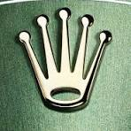
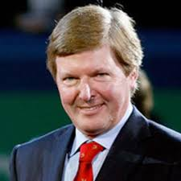
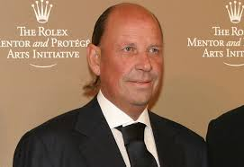

ROLEX WATCH:

This is the symbol of the rolex watch.
Rolex is a luxury Swiss watch brand, founded in 1905, renowned for its innovation, quality, and precision. the first waterproof wristwatch, and the Perpetual self-winding mechanism.
Founding:
Rolex was founded in 1905 as Wilsdorf and Davis in London by German entrepreneur Hans Wilsdorf.
THE OYSTER :
In 1926, Rolex launched the Oyster, the world's first waterproof wristwatch, which became a cornerstone of its legendary collection.
Eight Qualities:
Rolex watches are characterized by eight fundamental qualities: precision, waterproofness, autonomy (power reserve), robustness, simplicity, craftsmanship, comfort, and durability.
Premium Materials:
The brand uses premium materials for its timepieces, contributing to their high value and resistance.
Hans Wilsdorf Foundation:
Since 1960, Rolex has been owned by the Hans Wilsdorf Foundation, a private family trust.
average rate of rolex watch :
The entry-level models start at around $6,400, while some limited-edition models can cost over $70,000. When it comes to buying a Rolex, there are a few vintage models you can get as well. While the rare models can be more expensive, a decent vintage can start around $5,000 today.
Rolex is from country:
Switzerland
Rolex creates, manufactures, assembles and tests all its watches exclusively in Switzerland, thanks to the know-how and commitment of more than 9,000 employees at the brand's four sites, all at the cutting edge of technological progress.
symbol of rolex:
minimum rate of rolex watches:
Rolex Model | Reference Number | Starting Price (INR)
Rolex Day-Date | Ref. 228238 | ₹20,07,517
Rolex Oyster Perpetual | Ref. 124300 | ₹5,45,000
Rolex Explorer | Ref. 124270 | ₹7,99,000
Rolex Sea-Dweller | Ref. 126600 | ₹12,75,000
CEO of rolex:Jean-Frederic Dufour(2014-)
How much CEO earns:
The estimated total pay range for a CEO Founder at Rolex is £96K-£103K per year, which includes base salary and additional pay. The average CEO Founder base salary at Rolex is £101K per year. The average additional pay is £0 per year, which could include cash bonus, stock, commission, profit sharing or tips.
Iconic Models:
Submariner: A quintessential diving watch.
GMT-Master: An influential model that revolutionized GMT watches.
Day-Date: Famous for its unique day-of-the-week display, known as the "Presidents' Watch".
Oyster Perpetual: An everyday, timeless, and versatile watch that continues to be reinvented.
Does rolex have batteries:
As it turns out, most Rolexes do not have batteries because they run on self-winding movements instead; however, there is one model which does contain an electronic component: the Rolex Oysterquartz.
How to charge rolex:
A full wind on a Rolex - around 30 full turns of the crown - should fully charge the mainspring, this will give around 70 hours or 3 days of power to the watch.
Previous CEOs of Rolex SA:
Gian Riccardo Marini: Served as CEO from 2011 to 2014.

Bruno Meier: Served as CEO from 2008 to 2011.

Patrick Heiniger: Headed the company from 1992 to 2008.
Who has Rolex in India?
Abaran Timeless Jewellery Taj West End, 41 Race Course Road High Grounds. ...
C T Pundole & Sons Pvt. Ltd. ...
Cooke & Kelvey New Delhi 3 Scindia House Janpath. ...
Dia Shop No. ...
Dia The Heritage Wing, The Taj Mahal Palace & Tower Hotel, Apollo Bunder. ...
Ethos Mall of Asia- Bangalore ...
Helvetica Chennai ...
Kamal Watch Co.
How to rolex is original?
How To Spot a Fake Rolex
Trust Your Seller. Steering clear of imitation or counterfeit watches starts with a simple yet powerful step: choosing a watch seller with an impeccable reputation. ...
Check For Quality. ...
Serial & Model Number Engravings. ...
Markings. ...
Movement. ...
Dial, Hands, & Finishing. ...
Cyclops. ...
Water Resistance.
Life span of rolex:
In the majority of cases, a Rolex timepiece can last a lifetime, especially if it's serviced regularly. While Rolex recommends service every ten years, it's a good idea to have your watch looked at every 5 to 7 years to ensure optimal performance.
How to know if the rolex is stolen?
Rolex keeps a record of all lost and stolen watches in its database. This record is accessible by an authorized dealer and service center anywhere in the world. Give them your serial number along with your proof of ownership. They will mark the watch in their database.
if you dont wear what happens to the watch?
If you take it off and set it aside, the watch will retain its “charge” for two days or more, depending on the model. However, if you haven't worn your Rolex for more than a couple of days and the watch has stopped, we recommend that you manually wind it when you set the time before putting it on.
Top 8 Luxury Watch Brands in 2025
1)Rolex.
2)Cartier.
3)Omega.
4)Audemars Piguet.
5)Patek Philippe.
6)Richard Mille.
7)Longines.
8)Vacheron Constantin.
Web page designer details:
Name:Konala Phani Bapi Reddy
Country:India
address:Andhrapradesh/westgodavari/palakol
he is an engineering student
THANKYOU!